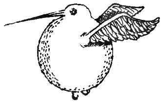

Dördüncü Bölüm:
Altın Snitch'in Gelişi
1100'lü yılların başlarından itibaren, Sinicit avı cadılar ve büyücüler arasında epey popülerdi. Altın Sinicit (bakınız: Resim B) günümüzde korunan türler arasındadır. O zamanlarda ise Kuzey Avrupa'da yaygındı, ama saklanmaya yatkınlığı ve inanılmaz hızı sebebiyle Muggler'lar tarafından tespit edilmesi çok zordu.
Sinicit'lerin ufak boyu, havadaki dikkate değer çevikliği ve yırtıcılardan uzak durma konusundaki becerisi, onları yakalayan büyücülere iyiden iyiye prestij getiriyordu. Quidditch Müzesi'nde sergilenen bir on ikinci yüzyıl duvar halısı, Sinicit yakalamaya çıkmış bir grubu gösterir. Goblenin ilk kısmında bazı avcılar ağ taşımakta, bazıları asa kullanmakta, bazılarıysa Sinicit'i elleriyle yakalamaya çalışmaktadır. Goblen, Sinicit'in genellikle onu yakalayanın avcunda ezildiği gerçeğini gözler önüne serer. Son kısmında ise, Sinicit'i yakalayan büyücünün bir kese altınla ödüllendirildiğini görürüz.

Çizim B
Sinicit avı birçok açıdan utanç vericiydi. Sağduyu sahibi her büyücü, bu barışsever minik kuşların spor adına avlanmasını kınamalıdır. Dahası, genellikle güpegündüz düzenlenen Sinicit avları, Muggle'lar tarafından uçan süpürge görülmesine en çok yol açan uğraştı. Ancak o zamanın Büyücüler Konseyi, sporun popülerliğine engel olamadı - hatta, az sonra göreceğimiz üzere, Konseyin bu uğraşı zararlı bulduğu bile söylenemezdi.
Sonunda 1269'da, Büyücüler Konseyi başkanı Barberus Bragge'nin de katıldığı bir maçta, Sinicit avının yolu Quidditch'le kesişti. Bugün bunu bilmemizin sebebi, olaya tanıklık eden Kent'li Madam Modesty Rabnott'un Aberdeen'deki kızkardeşi Prudence'a gönderdiği mektuptur (bu mektup da Quidditch Müzesi'nde sergileniyor). Madam Rabnott'a göre, Bragge maça kafes içinde bir Sinicit getirmiş ve orada toplanmış olan oyunculara, oyun bitmeden Sinicit'i yakalayana yüz elli Galleon{1} vereceğini söylemiş. Madam Rabnott daha sonra olanları şöyle anlatıyor:
Oyuncular topluca havaya yükseldi, Quaffle'ı umursamıyorlar, Blooder'lan atlatıyorlardı. İki Tutucu da kalelerini bırakıp ava katıldılar. Zavallı minik Sinicit bir kaçış yolu bulmak için sahada bir oraya bir buraya uçuyordu, ama maçı seyreden büyücüler Püskürtme Büyüsü yaparak kaçmasına engel oluyorlardı. Pru'cum, sen benim Sinicit avı konusundaki hislerimi de, tepemin tası attığında nasıl bir hal aldığımı da gayet iyi bilirsin. Sahaya fırlayıp çığlık çığlığa bağırmaya başladım: "Başkan Bragge, bu sizinki spor falan değil! Bırakın Sinicit'i gitsin de, görmeye geldiğimiz şu asil oyunu seyredelim!" Bilmem buna inanacak mısın, Pru, ama o yabani bana güldü, bir de kalkıp boş kuş kafesini kafama attı. Eh, gözümü kan bürüdü, Pru, cidden gözümü kan bürüdü. Zavallı minik Sinicit bana doğru uçtuğunda, bir Çağırma Büyüsü yaptım. Benim Çağırma Büyüleri'min ne kadar iyi olduğunu sen bilirsin, Pru – elbette onlar gibi süpürge üstünde olmadığımdan nişan almak benim için daha kolay oldu. Minik kuş vızzt diye elime geldi. Onu cüppemden içeri sokup deli gibi kaçmaya başladım.
Eh, sonunda beni yakaladılar, ama yakalanmadan önce kalabalığın içinden kurtulup Sinicit'i salıvermiştim bile. Başkan Bragge fena halde kızmıştı, bir an için beni kurbağaya ya da daha beter bir şeye çevirecek sandım. Neyse ki danışmanları onu yatıştırdılar ve sonunda oyunu aksattığım için on Galleon'luk bir cezaya çarptırıldım sadece. Ebette ömrümde on Galleon sahibi olmuş değilim, o yüzden bizim eve güle güle demek zorunda kaldım.
Kısa süre sonra oraya gelip senin yanına yerleşeceğim, neyse ki Hipogrif'i almadılar. Sana şunu söyleyeyim, Pru, oy veriyor olsaydım, Başkan Bragge bir oy kaybetmişti.
Seni seven kardeşin,
Modesty
Madam Rabnott'un cesareti belki bir Sinicit'i kurtarmıştı ama, hepsini kurtaramazdı. Başkan Bragge'nin buluşu, Quidditch'in doğasını geri dönülmez bir biçimde değiştirdi. Çok geçmeden, bütün Quidditch maçlarında Altın Sinicit'ler salıverilmeye başlanmıştı bile, her iki takımdan birer oyuncunun (yani Avcılar'ın) yegâne görevi onları yakalamaktı. Kuş öldürüldüğünde oyun bitiyor ve başarıya ulaşan Avcı'nın takımı, Başkan Bragge'nin vaat ettiği yüz elli altının anısına, yüz elli puan kazanıyordu. Sinicit'i Madam Rabnott'un sözünü ettiği Püskürtme Büyülerı'yle saha içinde tutmak ise seyircilerin göreviydi.
Ancak bir sonraki yüzyılın ortalarında Altın Sinicit'lerin sayısı o denli azaldı ki, çok daha aydın biri olan Elfrida Clagg'in başkanlığındaki Büyücüler Konseyi, Altın Sinicit'i korunan türler arasına sokarak hem öldürülmesini hem de Quidditch maçlarında kullanılmasını yasakladı. Somerset'te Modesty Rabnott Sinicit Koruma Alanı kuruldu ve Quidditch oyunu varlığını sürdürebilsin diye, bu kuşa bir alternatif bulmak amacıyla hummalı bir arayış başladı.
Altın Snitch'i, Godric's Hollow'lu Bowman Right'ın icat ettiği söylenir. Ülkenin her yanındaki Quidditch takımları Sinicit'in yerini tutacak bir kuş bulmaya çalışadursun, becerikli bir metal-tılsımcısı olan Wright, Sinicit'in davranışlarını ve uçuşunu taklit edebilecek bir top yaratmaya koyuldu. Ölümüyle birlikte ardında bıraktığı, ülkenin her yanından gelen siparişleri listeleyen rulolar dolusu parşömen, bu görevi kusursuz bir biçimde başardığının en iyi kanıtı (bu parşömenler şu anda özel bir koleksiyoncunun elinde). Adını Bowman'ın koyduğu Altın Snitch, tam olarak bir Sinicit ağırlığında, ceviz büyüklüğünde bir toptu. Gümüş kanatlarının tıpkı Sinicit'inki gibi dönebilir eklemlere sahip olması sayesinde, tıpkı ona model alınan kuş gibi şimşek hızıyla ve büyük bir şaşmazlıkla dönebiliyordu. Öte yandan, Sinicit'in aksine, Snitch'e sahanın sınırları içinde kalmasını sağlayan bir büyü yapılmıştı. Altın Snitch'in oyuna dahil edilişinin, üç yüz yıl önce Queerditch Bataklığı'nda başlayan süreci sona erdirdiği söylenebilir. Quidditch gerçekten doğmuştu artık.